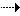
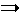
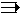
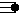

Pour sélectionner l'effaceur de sentiers, de chemins, de routes ou de routes nationales.
Sentier ou hors piste
 Pour sélectionner le trait correspondant à un sentier ou hors piste.
Pour sélectionner le trait correspondant à un sentier ou hors piste. Pour sélectionner le trait correspondant à une destination sur un sentier ou hors piste.
 Pour sélectionner le trait correspondant à une destination inverse sur un sentier ou hors piste.
Pour sélectionner le trait correspondant à une destination inverse sur un sentier ou hors piste.Pour sélectionner le trait correspondant à une origine sur un sentier ou hors piste.
 Pour sélectionner le trait correspondant à une origine inverse sur un sentier ou hors piste.
Pour sélectionner le trait correspondant à une origine inverse sur un sentier ou hors piste.Chemin
 Pour sélectionner le trait correspondant à un chemin.
Pour sélectionner le trait correspondant à un chemin. Pour sélectionner le trait correspondant à une destination sur un chemin.
Pour sélectionner le trait correspondant à une destination sur un chemin. Pour sélectionner le trait correspondant à une destination inverse sur un chemin.
Pour sélectionner le trait correspondant à une destination inverse sur un chemin. Pour sélectionner le trait correspondant à une origine sur un chemin.
Pour sélectionner le trait correspondant à une origine sur un chemin. Pour sélectionner le trait correspondant à une origine inverse sur un chemin.
Pour sélectionner le trait correspondant à une origine inverse sur un chemin.Route
 Pour sélectionner le trait correspondant à une route.
Pour sélectionner le trait correspondant à une route. Pour sélectionner le trait correspondant à une destination sur une route.
 Pour sélectionner le trait correspondant à une destination inverse sur une route.
Pour sélectionner le trait correspondant à une destination inverse sur une route. Pour sélectionner le trait correspondant à une origine sur une route.
Pour sélectionner le trait correspondant à une origine sur une route.Pour sélectionner le trait correspondant à une origine inverse sur une route.
Route nationale
 Pour sélectionner le trait correspondant à une route nationale.
Pour sélectionner le trait correspondant à une route nationale. Pour sélectionner le trait correspondant à une destination sur une route nationale.
Pour sélectionner le trait correspondant à une destination sur une route nationale. Pour sélectionner le trait correspondant à une destination inverse sur une route nationale.
Pour sélectionner le trait correspondant à une destination inverse sur une route nationale.Pour sélectionner le trait correspondant à une origine sur une route nationale.
 Pour sélectionner le trait correspondant à une origine inverse sur une route nationale.
Pour sélectionner le trait correspondant à une origine inverse sur une route nationale.Route avec séparateur central
 Pour sélectionner le trait correspondant à une route avec séparateur central.
Pour sélectionner le trait correspondant à une route avec séparateur central. Pour sélectionner le trait correspondant à une destination sur une route avec séparateur central.
 Pour sélectionner le trait correspondant à une destination inverse sur une route avec séparateur central.
Pour sélectionner le trait correspondant à une destination inverse sur une route avec séparateur central. Pour sélectionner le trait correspondant à une origine sur une route avec séparateur central.
 Pour sélectionner le trait correspondant à une origine inverse sur une route avec séparateur central.
Pour sélectionner le trait correspondant à une origine inverse sur une route avec séparateur central.Autres
 Pour sélectionner le trait correspondant à une voie de chemin de fer.
Pour sélectionner le trait correspondant à une voie de chemin de fer.Pour sélectionner le trait correspondant à une rivière.